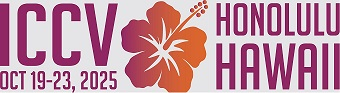
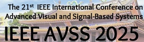
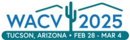
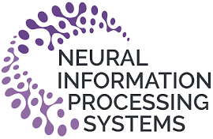
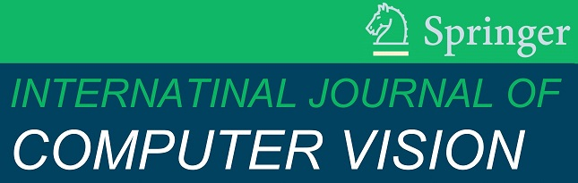
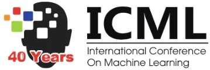
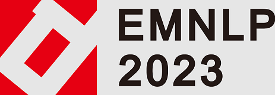
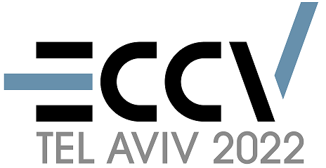
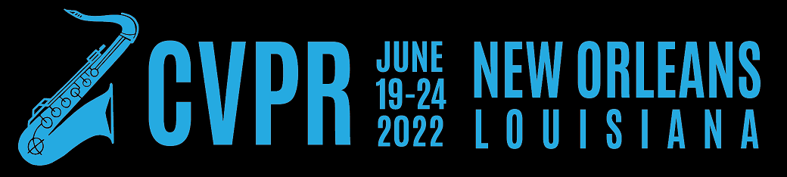

I am on the faculty of FST, University of Macau, leading the Computer Vision Lab. I will be with the Okinawa Institute of Science and Technology (OIST) in the summer of 2026. I was an Assistant Professor in the Department of CSE at Texas A&M University. I did my postdoc training at the Robotics Institute, CMU, working with Deva Ramanan. I received my PhD from UC-Irvine, working with Charless Fowlkes.
My research lies in Computer Vision and its interactions with other fields (e.g., ML, NLP, HCI, robotics, and graphics), broad applications (e.g., AR/VR and autonomous driving), and diverse disciplines (e.g., biology and paleoecology). I have been promoting the research topic Open-World Vision, on which my ICCV'21 paper was recognized for Best Paper / Marr Prize. On this topic, I study how to make vision algorithm applicable in the real open world, e.g., through interdisciplinary research. My previous interdisciplinary research built a high-throughput pollen analysis system, which was featured by the National Science Foundation that "opens a new era of fossil pollen research". Currently, I'm establishing the research theme Auto-Annotation from Expert-Crafted Annotation Guidelines (AutoExpert).
I am actively looking for self-motivated PhD students at CIS, FST, University of Macau. PhD students will be fully funded with fellowships. I am NOT taking PhD applicants in CSE, TAMU.
contact
- gmail: aimerykong [at] gmail [dot] com [issues related to others; unlikely to reply]
- email: skong [at] um [dot] edu [dot] mo [issues related to the University of Macau]
- email: shu [at] tamu [dot] edu [issues related to TAMU]
Teaching
- [UM CISC7401] Advanced Machine Learning: 2026Spring, 2025Spring
- [UM CISC3011] Digital Image Processing: 2025Fall
- [UM CISC3027/CISC7014] Visual Perception and Learning in the Open World: 2024Fall, 2023Fall
- [TAMU CSCE689] Visual Learning for Visual Recognition: 2023Spring
Workshops
- The AutoExpert Workshop: 1st at CVPR'26
- The Open World Vision Workshop: 6th at CVPR'26, 5th at CVPR'25, 4th at CVPR'24, 3rd at CVPR'23, 2nd at CVPR'22, 1st at CVPR'21,
- The Workshop of Dealing with Novelty in Open Worlds (DNOW): 2nd at WACV'23, 1st at WACV'22,
Professional services
- Area Chair: NeurIPS'24; NeurIPS'25;
- Demo Chair: CVPR'24; CVPR'26
- organizer: Open-World Vision workshops at CVPR & WACV; AutoExpert workshop at CVPR;
- Associate Editor: Pattern Recognition;
- Grant Reviewer/Panalist: NSF GRFP; LTI by the Austrian Federal Ministry of Education, Science and Research;
- Reviewers/program committee: CVPR, ICCV, ECCV, ICLR, NeurIPS, ACL, ICML, IJCV, PAMI, Nature, PLOS One, RA-L, TIP, etc.
Updates
-
Congratulations to Dr. Tian Liu on the successful PhD defense! (2/12/2026)
-
Congratulations to Arabi on the CHI'26 paper "EUREXA: End-User Reconfiguration of Environment with eXplainable Augmentation for Generative Fabrication"! (2/9/2026)
-
Congratulations to Wei on the RA-L paper "Super LiDAR Intensity for Robotic Perception"! (1/27/2026)
-
Congratulations to Yechi on the WACV'26
 paper "Roadside Monocular 3D Detection via 2D Detection Prompting"! (11/22/2025)
paper "Roadside Monocular 3D Detection via 2D Detection Prompting"! (11/22/2025)
-
Congratulations to Yuzhu on the ICCV'25  paper "Attention to Burstiness: Low-Rank Bilinear Prompt Tuning"! (6/30/2025)
-
Congratulations to Kaijie on the ICCV'25 paper "Information-Bottleneck Driven Binary Neural Network for Change Detection"! (6/30/2025)
-
Congratulations to Sophie on the AVSS'25  paper "Dare to Plagiarize? Plagiarized Painting Recognition and Retrieval"! (6/30/2025)
-
Congratulations to Jennifer on the Paleobiology
 paper "Addressing the Open World: Detecting and Segmenting Pollen on Palynological Slides with Deep Learning"! (5/15/2025)
paper "Addressing the Open World: Detecting and Segmenting Pollen on Palynological Slides with Deep Learning"! (5/15/2025)
-
Congratulations to Marc-Elie on the New Phytologist
 paper "Pollen Morphology, Deep Learning, Phylogenetics, and the Evolution of Environmental Adaptations in Podocarpus"! (5/4/2025)
paper "Pollen Morphology, Deep Learning, Phylogenetics, and the Evolution of Environmental Adaptations in Podocarpus"! (5/4/2025)
-
Presented at WACV'25 Workshop on Out-of-Label Hazards in Autonomous Driving, titled "The Concept Misalignment between Experts and AI, from Data Labeling to Data Versioning" [slides]! (3/4/2025)
-
Congratulations to Tian, Huixin and Shubham on the CVPR'25 paper "Few-Shot Recognition via Stage-Wise Augmented Finetuning"! (2/27/2025)
-
Congratulations to Yunhan, Qianqian and Nahyun on the CVPR'25 paper "Solving Instance Detection from an Open-World Perspective"! (2/27/2025)
-
Congratulations to Dr. Nick Milef on the successful PhD defense and the new position as a Research Scientist at Meta ! (2/11/2025)
-
Congratulations to Dr. Marc-Élie Adaimé on the successful PhD defense and the new position as a Research Fellow at Smithsonian Institution ! (1/20/2025)
-
Presented at ACCV'24 Workshop on Object Instance Detection, titled "Instance Detection and Tracking in the Open World" [slides]! (12/9/2024)
-
Congratulations to Runzhi on the DTCO and Computational Patterning paper "Automated Identification of Repeated Chip Layout Patterns", which is accepted for oral presentation! (11/26/2024)
-
Congratulations to Hasnat on the WACV'25  paper "UAL-Bench: The First Comprehensive Unusual Activity Localization Benchmark"! (10/29/2024)
-
Congratulations to Anish and Neehar on the NeurIPS'24  paper "Revisiting Few-Shot Object Detection with Vision-Language Models"! (9/26/2024)
-
Congratulations to Samia on the ECCV paper "CriSp: Leveraging Tread Depth Maps for Enhanced Crime-Scene Shoeprint Matching"! (7/1/2024)
-
Congratulations to Yuzhu on the ECCV paper "Improving Knowledge Distillation via Regularizing Feature Norm and Direction", which is accepted for oral presentation! (7/1/2024)
-
Congratulations to Anirudh and Meghana on the IJCV  paper "Lidar Panoptic Segmentation in an Open World"! (6/4/2024)
-
Congratulations to Jia on the ICML'24 paper "LCA-on-the-Line: Benchmarking Out of Distribution Generalization with Class Taxonomies", which is accepted for oral presentation! (5/2/2024)
-
Congratulations to Nick on the SIGGRAPH'24 paper "Towards Unstructured Unlabeled Optical Mocap: A Video Helps!"! (3/25/2024)
-
Call for demos at
 CVPR'24! If you have exciting demos,
consider to submit and present at CVPR in June at Seattle!
The submission is trivial and its deadline is this Sunday, Mar 10, 2024 11:59 PM AOE.
Here is the link to submit.
CVPR'24! If you have exciting demos,
consider to submit and present at CVPR in June at Seattle!
The submission is trivial and its deadline is this Sunday, Mar 10, 2024 11:59 PM AOE.
Here is the link to submit.
-
Congratulations to Shubham, Tian, and Zhiqiu on the CVPR'24
paper "The Neglected Tails of Vision-Language Models"! (2/27/2024)
-
Congratulations to Yunhan on the CVPR'24
paper "Instance Tracking in 3D Scenes from Egocentric Videos"! (2/27/2024)
-
Congratulations to Zeyi and Ye on the CVPR'24
paper "Alpha-CLIP: A CLIP Model Focusing on Wherever You Want"! (2/27/2024)
-
Congratulations to Xiaogang on the CVPR'24
paper "Boosting Image Restoration via Priors from Pre-trained Models"! (2/27/2024)
-
Congratulations to Nahyun, Emory, Muhammad, and Joanne on the CHI'24 paper "AccessLens: Auto-detecting Inaccessibility of Everyday Objects"! (1/19/2024)
-
Congratulations to Marc-Elie on the PNAS Nexus paper "Deep Learning Approaches to the Phylogenetic Placement of Extinct Pollen Morphotypes"! (11/21/2023)
-
Congratulations to Shubham on the EMNLP'23  paper "Prompting Scientific Names for Zero-Shot Species Recognition"! (10/17/2023)
-
Congratulations to Yunhan, Qianqian and Nahyun on the NeurIPS'23 paper "A High-Resolution Dataset for Instance Detection with Multi-View Instance Capture"! (10/17/2023)
-
Congratulations to Meng on the NeurIPS'23 paper "OV-PARTS: Towards Open-Vocabulary Part Segmentation"! (10/17/2023)
-
Our "3rd Workshop of Visual Perception and Learning in an Open World"
 will be held in conjunction with CVPR'23 on June 18, 2023!
will be held in conjunction with CVPR'23 on June 18, 2023!
 (6/17/2023)
(6/17/2023)
-
Congratulations to Samia on the WACV'23 paper "Creating a Forensic Database of Shoeprints from Online Shoe Tread Photos"! (10/10/2022)
-
Congratulations to Shubham and Jeet on the WACV'23 paper "Far3Det: Towards Far-Field 3D Detection"! (10/10/2022)
-
Congratulations to Zhiqiu on the NeurIPS'22 paper "Continual Learning With an Evolving Class Ontology"! Read more in the webstie. (9/14/2022)
-
Congratulations to Neehar on the CoRL'22
 paper "Towards Long Tailed 3D Detection"! (9/10/2022)
paper "Towards Long Tailed 3D Detection"! (9/10/2022)
-
Our 2nd workshop of Dealing with the Novelty in Open Worlds will be held on Jan 3rd, 2023, at WACV'23 in Waikoloa, Hawaii! (8/15/2021)
-
Congratulations to Yi-Ting, Jinghao, and Zelin on the ECCV'22  paper "Multimodal Object Detection via Probabilistic Ensembling", which is accepted for oral presentation! The proposed method was ranked the first in the KAIST challenge leaderboard. Code is available in github. (7/8/2022)
-
Our paper "OpenGAN: Open-Set Recognition Via Open Data Generation" has been published by IEEE Transactions on Pattern Analysis and Machine Intelligence (PAMI) (6/18/2022)
-
Our paper "Automated identification of diverse Neotropical pollen samples using convolutional neural networks" has been published by Methods in Ecology and Evolution (6/12/2022)
-
Our workshop "Visual Perception and Learning in an Open World"
will be held in conjunction with CVPR'22

(4/29/2022)
-
Congratulations to Shaden on the CVPR'22 paper "Long-Tailed Recognition via Weight Balancing"! Code is available in the github page! (3/2/2022)
-
Our paper "OpenGAN: Open-Set Recognition via Open Data Generation" received honorable mention for Best Paper / Marr Prize at ICCV'21
 .
Watch this 12min video
(10/12/2021)
.
Watch this 12min video
(10/12/2021) -
Our in-person workshop Dealing with the Novelty in Open Worlds will be held on Jan 4, 2022, in conjunction with WACV'22 (8/27/2021)
-
Our challenge Open-World Image Classification
is online now! The challenge will be held in conjunction with
our Open World Vision workshop and CVPR'21
(5/14/2021)
-
Congratulations to Yunhan Zhao on the paper "Camera Pose Matters: Improving Depth Prediction by Mitigating Pose Distribution Bias", which is accepted for oral presentation by CVPR'21 (03/3/2021)
-
Our virtual workshop Open-World Vision
will be held in conjunction with
CVPR'21
(12/11/2020)
-
Our work is published on "Improving the Taxonomy of Fossil Pollen using Convolutional Neural Networks and Superresolution Microscopy", and featured by the NSF
 .
(09/14/2020)
.
(09/14/2020)